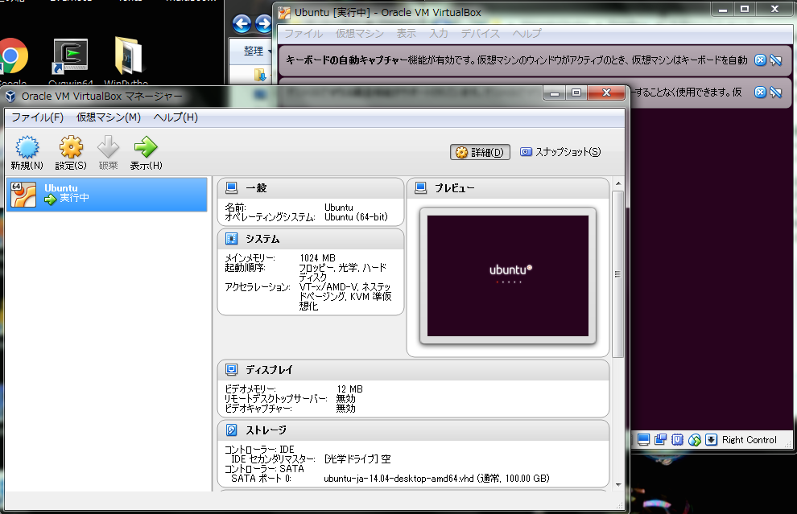

Python環境を整える
第1回のデータ分析勉強会に向けて，まず，iPython notebookを使える環境を整えたいと思います．
この資料中には，iPython notebookおよび，numpyなどのパッケージのインストール方法のみが書いてあります．
TensorFlowのインストールについては現在準備中です．
可能な方は，TensorFlowのウェブページを参考にインストールしてみてください．
もくじ
Macの場合
基本的にターミナル.appを使います．
Homebrewのインストール
パッケージ管理のツールをインストールします．MacPortが入ってたら，Homebrewは入れないでください．
Xcode.appは入っている前提で話を進めています．インストールされていたなかったら， Mac App Store からダウンロードしてください
-
Python関係でいろいろインストールしないといけないので， Homebrew をインストールします．細かいところは， Homebrew のWebページを確認しましょう．
ターミナルを起動して，以下のコマンドを実行．ruby -e "$(curl -fsSL https://raw.githubusercontent.com/Homebrew/install/master/install)" -
brew doctor
ターミナルに以下を打ち込む
brew doctorすると，たくさんのWarningが出てきます．確か，Rをインストールしていると，いっぱい出てきた気がします．
Homebrewをインストールしたときに出るWarningの対処
取り急ぎ，対応が必要なものは，アクセス権に関わるものだけなので，以下のページを参考にしたら，解消できます．
iPython notebook 他のインストール
Homebrewがうまく動いたら，今回の勉強会に必要なツールを入れていきましょう．
- Python3をインストールする．
Macには標準でPythonが入っていますが，今回はPython 3.xベースで行くので，Python3をインストールします．
以下をターミナルで実行．brew install python3 - gccをインストールする．
以下をターミナルで実行．
brew install gcc - pip3をインストールする．
以下をターミナルで実行．
curl -kL https://raw.github.com/pypa/pip/master/contrib/get-pip.py | python3Python2.x用のpipを入れるならhomebrewでpythonをインストールすればOK
そのあとにpython3となっているところをpython2にしたらOKMacでのpipのインストールが厄介っぽいので， ここ を参照．
- jupyterをインストールする．
以下をターミナルにて実行．
pip3 install jupyter - numpyをインストールする．
以下をターミナルにて実行．
pip3 install numpy - scipyをインストールする．
以下をターミナルにて実行．
pip3 install scipy - matplotlibをインストールする．
以下をターミナルにて実行．
pip3 install matplotlib - おわり．
動作確認
以下をターミナルにて実行．
ipython notebookiPython notebookがブラウザで起動されたら，オッケー！
Windowsの場合
WinPythonを使う
WinPythonを入れたら一発でiPython notebookを使う環境が整いますが，
今回の勉強会で使うTensorFlowがWindowsには対応していないので，勉強会ではおそらく使いません．
ただ，numpy, scipy, pandasなどの便利なライブラリが最初から入っていて，Windows上で使うのには，
とても便利です．
- WinPythonのダウンロード
すでにPythonをインストールしてあっても，してなくても大丈夫．
純粋なPythonをインストールしたものとは独立したものになっています．以下のページから，WinPython3.xをダウンロード．
WinPython
だいたい1GBくらいのストレージ空容量が必要です． - 展開
WInPython-64bit-3.x.x.x.exeを開く(x.x.xは適宜読み替えをしてください．)
任意のディレクトリに展開したらいいと思います．

- 起動
展開できたら，展開先のディレクトリの中のWinPython Command Prompt.exeを起動してください．
そうすると，黒い画面になるので，以下のように入力してください．
ipython notebook
ブラウザが起動して，以下のような画面が出たらOK!
仮想マシン上でUbuntuを動かす
先述の通り，Tensor FlowはWindows上では動かないので， Ubuntu というOSをWindows上で動かした上で，その Ubuntu なるOSの上でPythonを使います．
Unixライクな操作になれることで，画期的なデータ前処理ツールNYSOLを使う時の ハードルは下がるのではないかなと思います．
- VirtualBoxのダウンロード
仮想のPCを動かすためのソフトウェア Oracle Virtual Box をダウンロードします．
ダウンロードしたファイルを開くと，セットアップウィザードが立ち上がるので，そのまま実行してインストールします．
インストールが終わったら一回，開くだけ開いてみましょう．

次のような画面になれば，VirtualBoxのインストールは完了です！
- Ubuntuのダウンロード
先ほど，Virtualboxをダウンロードして，箱はできたので， 次は，その中に入れるためのOSをダウンロードしてきます．
Ubuntuのサイトからダウンロードします． 仮想のハードディスクイメージをダウンロードしたいので， ここ から「Ubuntu 14.04 LTS」を選択しましょう．
ダウンロードできたら，展開します． 展開してできたフォルダはマイドキュメントにでも置いておくと良いでしょう． （仮想イメージなので，起動するたび使います． 間違って消してしまうと起動しなくなってしまうので， わかりやすい場所に！）
- Ubuntuのインストール
ここで役者は揃いました．やっとインストールできます．
Virtual Boxを開いて，左上の「新規」ボタンをクリックします．
「仮想マシンを作成」画面になるので，「名前」欄に"Ubuntu"と入力します． すると，下二つのタイプ・バージョンは自動で設定してくれます． 賢い！
次に，仮想PCに割くメモリサイズを指定します． できるだけ大きいほうがいいですが，PCに搭載されているメモリに依るので， 半分弱くらいってところでしょうか．
僕は1GBにしました．少し足りなかったかなって感じがします．（後で変更可能です．）「ハードディスク」について聞かれます．ここで，さっきダウンロードしたUbuntuが効いてくるわけです．
ここで，先ほど移動したvhdファイルを選んであげましょう．
こうなればOKです．
これで，「作成ボタン」を押すと，Ubuntuのインストールされた仮想PCが出来上がります．
- Ubuntuのセットアップ
ここから，仮想PCを使える状態にしていきます．
起動ボタンを押して起動します．
少し待つと言語選択の画面になります．
続けて，時間帯・キーボードと設定していきます．
つづいて，ユーザーを作成します．
「あなたの名前」・「ユーザー名」・「パスワード」を決めてください．コンピュータの名前は自動的に決めてくれます．
初期設定を続けます．
初期設定が終わると，次のようなログイン画面になります．
先ほど決めたパスワードを入力してログインします．
ログインできたら，次のような画面になるかと思います．
これで，Ubuntuのセットアップまで終わりました．
- Guest Addition CD イメージの挿入
一応，ここまででいい感じに終わったと思いますが， あとあとの事を考えて，仮想Ubuntuの中にVirtualBoxのドライバをインストールします．
以上のような作業を行ってください．
UbuntuでPythonを動かす
いよいよPythonが動きます．iPython notebookなどのインストールについては，以下を参照してください．
Linux(Ubuntu)の場合
まず，いろいろインストールするために使う「端末」を起動します． Windowsでいうコマンドプロンプトみたいなやつです．
一番左上のボタンをクリックして，入力欄に「Terminal」もしくは「端末」と入力します．
すると，ウインクしているみたいなアイコンが出てくるので，それをクリックします，
こんな画面になると思います．
今から，この画面に
#commandPython3は入ってたと思うので，とりあえず，iPython notebookが動くようにすることが目標
iPython notebook 他のインストール
以下，インストールする必要のあるパッケージ
- pip3をインストールする．
以下を端末にて実行，パスワードとか聞かれるので，適宜入力．
sudo apt-get install python3-pip - gfortranをインストールする．
以下を端末にて実行，パスワードとか聞かれるので，適宜入力．
sudo apt-get install gfortran - libblas-dev liblapack-devをインストールする．
以下を端末にて実行，パスワードとか聞かれるので，適宜入力．
sudo apt-get install libblas-dev liblapack-devこれの実行でScipyのインストールがうまくいった
- libpng-dev libjpeg8-dev libfreetype6-devをインストールする．
以下を端末にて実行，パスワードとか聞かれるので，適宜入力．
sudo apt-get install libpng-dev libjpeg8-dev libfreetype6-devこれで，matplotlibのインストールがうまくいった
- jupyterをインストールする．
以下を端末にて実行．
sudo pip3 install jupyter - numpyをインストールする．
以下を端末にて実行．
sudo pip3 install numpy - pandasをインストールする．
以下を端末にて実行．
sudo pip3 install pandas - scipyをインストールする．
以下を端末にて実行．
sudo pip3 install scipy - matplotlibをインストールする．
以下を端末にて実行．
sudo pip3 install matplotlibインストールに際してなんかうまくいかなかったから， ここを参考．
- おわり
動作確認
以下を端末にて実行．
ipython notebookiPython notebookがブラウザで起動されたら，オッケー！
iPython notebookのテスト
ipython notebookのインストールが終わったら，Pythonゼミに耐えうるかどうか，テストします．
- ノートの作成
iPython Notebookが起動したら，ノートを作成します．

Newメニューをクリックして，Python 3を選択． すると，選択されているディレクトリにUntitled.ipynbが作成されます．
- 図を描く
以下を実行して，図が表示されたら成功です！